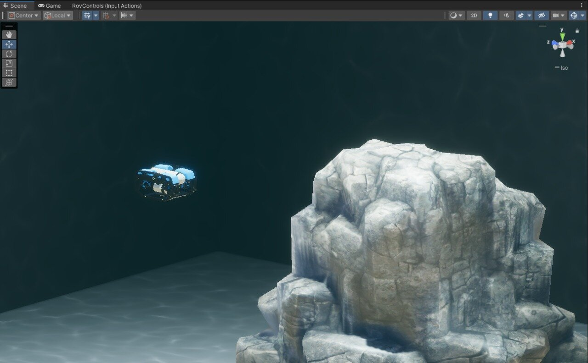

Recent Projects
Interactive Simulator Framework for XAI
Interactive Simulator Framework for XAI Applications in Aquatic Environments.
UJI Butler
Sign Language Recognition using YoloV7 to detect hand gestures and give commands to UR5 robot arm to serve coffee. After that, UR5 gives the coffee to kobuki robot to deliver it to the customer.
UnityUWSIM - Underwater Simulator
Developed a comprehensive underwater simulator using Unity that served as the competition platform for the 2nd MIR Annual Symposium Robotics Challenge at UJI, Spain. The simulator features a realistic underwater environment based on CIRTESU Lab with BlueROV2, docking stations, obstacles, and marine life for testing autonomous navigation and visual servoing algorithms.
Deep Visual Odometry (DVO)
Developed synthetic dataset collection pipeline using Unity and implemented Deep Visual Odometry on BlueROV2 with Unity Robotics integration for underwater navigation.
Autonomous Surface Vehicle (ASV)
Designed and programmed an autonomous DDBoat for trajectory following in open water environments.
🏆 Achievement:
- 1st Place - MIR Championship at Lac de Guélédan, France (2022)
RC Aircraft - Graduation Project
Designed and manufactured a remotely controlled aircraft as my BSc graduation project. Led tail design and conducted complete CFD analysis using Ansys for aerodynamic optimization.
🏆 Major Achievements:
- Best Engineering Graduation Project of the Year (2018) in Egypt
- 1st Place in Technical Design Report - SAE Aero Design 2018 Competition (Advanced Class)
- Competed in Van Nuys, California, USA among 37 international universities
Earlier Projects
RaptorII ROV
Designed and manufactured a remotely operated vehicle (ROV) to participate in MATE Regional Competition. Built the mechanical structure and integrated control systems for underwater operations.
Mass Airflow Sensor (MAF)
Designed and programmed a Mass Airflow Sensor for data acquisition project. Implemented sensor calibration and real-time data logging capabilities.
Quadcopter
Designed and manufactured a quadcopter drone in AAST workshop. Built the frame, integrated flight controller, and tuned PID parameters for stable flight.
Raptor I ROV
Designed and manufactured the first generation ROV to participate in MATE Regional Competition. Initial exploration into underwater robotics and vehicle control.
PV Solar Panel
Manufactured and welded a 250-watt photovoltaic solar panel at Tiba Solar Factory. Gained hands-on experience in renewable energy technology and manufacturing processes.